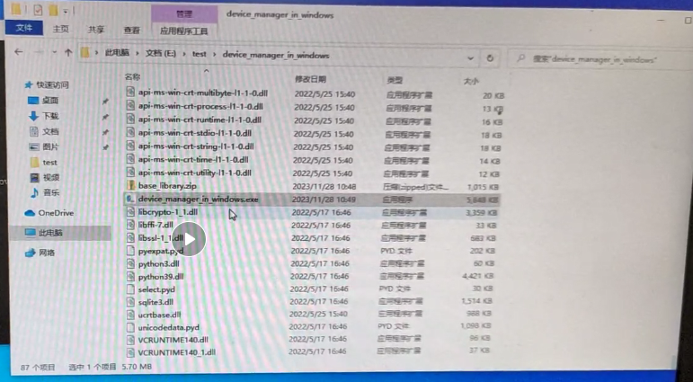
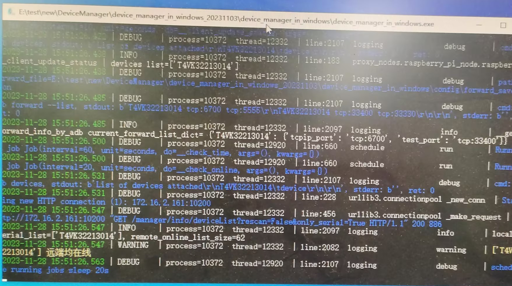
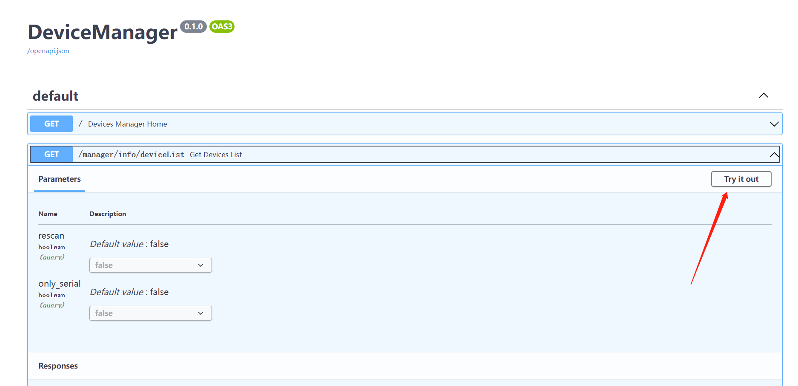
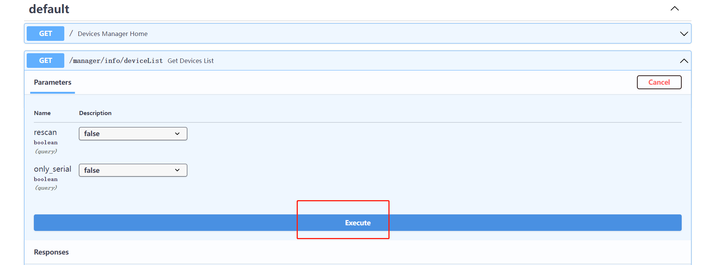
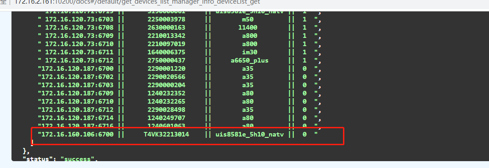
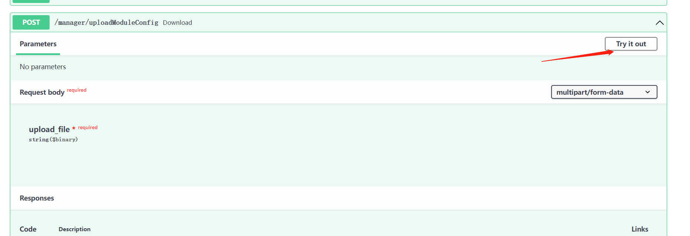
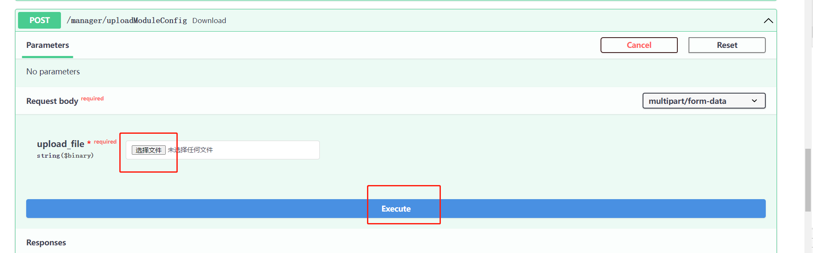
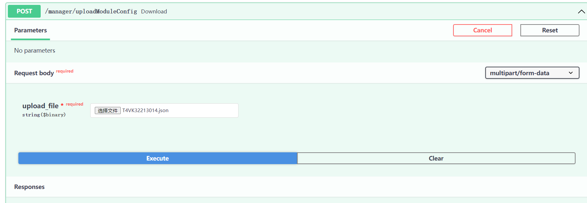

概要¶
提测之前,都要求自测试报告
测试电脑¶
DeviceManager
使用管理者权限,运行device_manager_in_windows.exe
需要注意运行device_manager_in_windows版本,可能有些版本运行不了.
正确运行后,命令行窗口要提示设备在线


后台¶
http://172.16.2.161:10200/docs#/default/get_devices_list_manager_info_deviceList_get
查看设备在线
点击try it out,然后点击execute, 显示设备的sn号,在线



上传设备的测试模块jason文件
点击try it out,上传jason文件,点击execute



jason文件样板,T4VK32213014.json
{
"PED_S": false,
"PED_AES": false,
"AdvanceSystem": false,
"MiscSettings": false,
"ALGORITHM": true,
"BASIC": false,
"CardType": ["Felica"]
}
jenkins配置执行任务¶
http://172.16.2.161:8080/
账号:paxdev,密码paxdev123
已有项目配置,Develop_MiscSettings_test
配置内容
pipeline {
agent {
node {
label 'master'
customWorkspace "/sdb1/jenkins/workspace/${env.JOB_NAME}"
}
}
stages {
stage('git pull') {
steps {
echo 'git pull'
git credentialsId: 'pw_lh', url: 'http://172.16.2.83/testtools/PaxTestByPytest.git'
}
}
stage('build env') {
steps {
echo 'build env'
sh 'ls'
echo 'current dir0=' + pwd()
sh 'python3 -m pip install -r requirements.txt'
}
}
stage('android test') {
steps {
// --suites ALGORITHM
echo 'android test'
sh """python3 -m pytest ./tests/pax/mutil/test_run_by_paydroidtester.py::test_android_case_by_devices --task_name ${JOB_NAME} --task_run_num ${BUILD_NUMBER} --serial T4VK32213014 --install_apk_dir ${signTestApkDir} --user libin --devkey f12e5613b580128ffa26ae7d71e476bd --project_name Android软件测试-2023 --wait_device_min 5 --module "ALGORITHM" --email_cc "xielianxiong@paxsz.com" """
}
}
}
post {
always {
echo 'One way or another, I have finished'
sh """python3 ./ci/deal_task.py ${JOB_NAME} ${BUILD_NUMBER}"""
}
success {
echo 'I succeeeded!'
}
unstable {
echo 'I am unstable :/'
}
failure {
echo 'I failed :('
}
changed {
echo 'Things were different before...'
}
}
}
使用方法¶
jason文件配置要测试的模块,改成true
jenkins 配置,修改sn号,跟测试的模块名称
--serial T4VK32213014--module "ALGORITHM"配置通知邮箱
--email_cc "xielianxiong@paxsz.com"